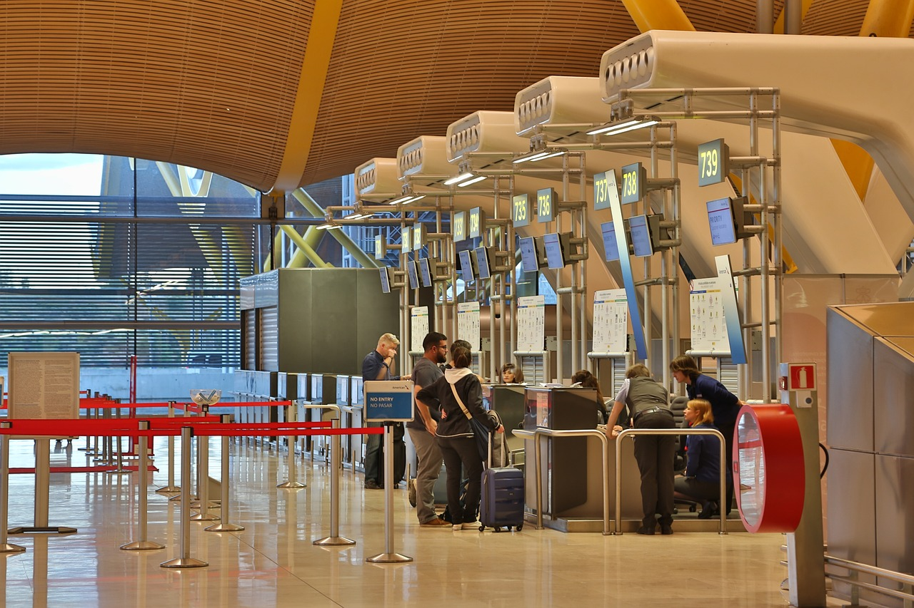
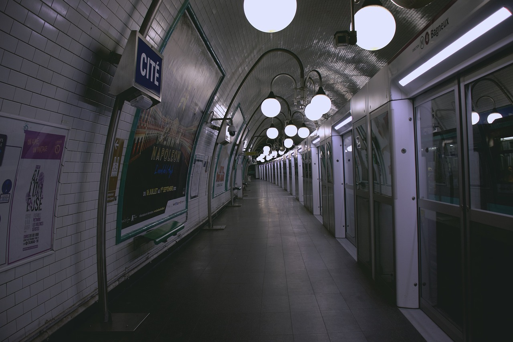

Con tus ahorros lográs conseguir dos pasajes a Francia, el vuelo será hoy a la noche y te preparas para cualquier cosa. Martha practica su francés mientras tú haces tus valijas. "No vamos de vacaciones ¿Sabes?" - Te dice Martha mientras suelta una carcajada. Tú te ríes y terminas de cerrar tu valija. Salen en taxi al aeropuerto de Londres y llegan una hora antes del vuelo para hacer el check-in.

Después de una hora y media de vuelo, llegan a la ciudad del amor: ¡París!
Se dedican a buscar un mapa de la ciudad para encontrar la Torre Eiffel, lugar al que la nota hace
referencia. Después de mucho buscar, no encuentran más que un mapa del metro de París con
símbolos marcando lugares importantes como los monumentos y por supuesto, la famosa torre. Deciden usarlo
como referencia.
Empiezan a correr para llegar a la parada más cercana de metro, y mientras lo hacen pasan por algunos
lugares lindos de la ciudad.


Finalmente llegan a la parada de metro y bajan las escaleras para adentrarse en el mismo, hay dos caminos que se pueden elegir, la línea Amarilla y la Roja. ¿Cuál es la que va más cerca de la Torre Eiffel?
